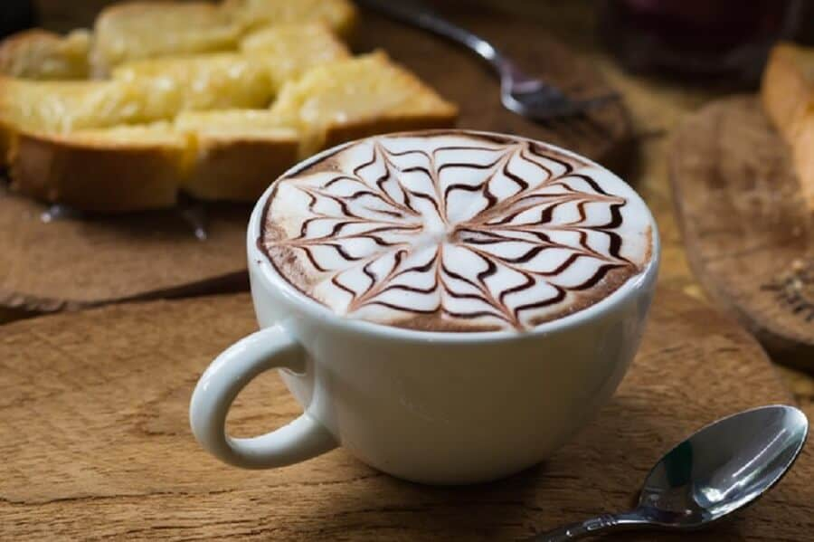

MOCHA LÀ GÌ? CÁCH PHA CAFE MOCHA NÓNG, ĐÁ
Cafe Mocha là gì? Tìm hiểu về cà phê Mocha
Cà phê Mocha là gì?
Cafe Mocha là một loại thức uống với sự kết hợp của Espresso, sữa nóng và hương vị sauce chocolate rất quyến rũ. Chính những thành phần này đã tạo nên một hỗn hợp hoàn hảo nhất, đó là vị đắng của cà phê kết hợp với cảm giác lắng đọng của chocolate.
Cafe Mocha rất thích hợp là một món giải khát trong những ngày trời nóng bức. Với hương vị nhẹ nhàng, hàm lượng cafein thấp phù hợp cho cả những người không quen uống cà phê. Cũng bởi do hàm lượng cafein thấp nên không gây mất ngủ. Do vậy, thức uống này rất được giới trẻ ưa chuộng, nhất là ở Mỹ.
Cách pha cà phê Mocha ngon
Sau khi đã biết cafe Mocha là gì, hương vị đặc trưng của nó ra sao, bạn có muốn thử sức để tự làm cho mình và gia đình một ly Mocha coffee tuyệt vời không? Nếu có thì hãy cùng chúng tôi bất tay vào theo trình tự các bước sau.
Chuẩn bị nguyên liệu
Khi đã hiểu bản chất của Mocha, chắc chắn bạn sẽ biết được mình nên chuẩn bị trước những gì. Đó là:
- Cà phê Espresso: Phải được pha bằng máy và đảm bảo được làm từ những hạt cà phê thơm ngon nhất.
- Sữa tươi tiệt trùng
- Sauce chocolate trắng hoặc đen đều được
- Bột ca cao
Ngoài ra, một phần rất quan trọng nữa là bạn cần chuẩn bị đầy đủ các loại máy móc như sau:
- Máy pha cà phê: Loại có vòi sục sữa
- Máy xay cà phê: Trường hợp bạn đã có cà phê rang xay sẵn đủ tiêu chuẩn pha Espresso thì không cần chuẩn bị bước này
- Ca đánh sữa trong trường hợp pha nóng hoặc bình lắc (shaker) cho trường hợp pha lạnh
- Ca đong (Zic đong) với các vạch ml để có thể đưa ra tỷ lệ đúng chuẩn nhất
Cách pha cafe mocha nóng
Để có thể tạo ra được hương vị đúng chuẩn nhất, trong cách làm mocha coffee của bạn cần tuân thủ tuyệt đối tỷ lệ mà chúng tôi đưa ra. Theo lượng ví dụ dưới đây của chúng tôi sẽ đủ làm một ly cà phê size M cho 1 người uống.
Tỷ lệ các thành phần:
- Cà phê Espresso giao động từ 25 – 30ml
- Sữa tươi tiệt trùng: Đong đúng 180ml
- Chocolate dạng lỏng (sauce): Đúng 15ml
- Bột ca cao tùy vào sở thích của mỗi người
Các bước làm rất đơn giản:
- Làm nóng cốc đựng bằng sứ bằng cách cho một lượng nước sôi vào bên trong, để một khoảng thời gian vừa đủ thì đổ đi và lau khô cốc.
- Cho lượng sauce chocolate đã chuẩn bị vào cốc.
- Lấy sữa cho vào ca đánh và cho lượng Espresso pha sẵn vào chung.
- Đánh nóng sữa tươi để tạo bọt tương tự cách làm latte trong thời gian đợi cà phê chảy.
- Tạo lớp mặt của cà phê bằng cách rắc một ít bột ca cao lên trên.
- Đổ sữa vào cà phê và có thể tạo hình tùy theo sở thích.
Như vậy là bạn đã có thể hoàn thành một ly cafe Mocha nóng để sẵn sàng thưởng thức. Khi uống bạn phải khuấy đều từ dưới lên trên để lớp chocolate hòa quyền với cà phê và sữa thì mới có hương vị chính xác được.
Cách pha cà phê mocha đá
Tỷ lệ các thành phần khi pha đá có sự khác biệt đôi chút với pha nóng như sau:
Tỷ lệ các thành phần:
- Lượng cà phê Espresso lúc này là gấp đôi, từ 50 – 60ml
- Sữa tươi không đường giảm xuống còn 80ml
- Sauce chocolate cũng chỉ dùng 10ml là đủ
- Ngoài ra cần có thêm 10ml đường nước
- Đá viên cũng không thể thiếu
Cách pha chế:
- Cho lượng sữa, sauce chocolate và đường nước vào bình lắc.
- Cho phần Espresso đã chuẩn bị vào chung, thêm đá, đóng nắp thật chặt và lắc đều tay.
- Rót hỗn hợp vừa tạo được ra cốc, rắc một ít bột ca cao lên trên để tạo bề mặt.
Như vậy là bạn đã hoàn thành được một ly mocha lạnh thật hấp dẫn. Để có thể tăng độ béo vào thơm ngon, bạn cũng có thể cho thêm một lượng kem lên trên.
Một vài lưu ý khi làm cafe Mocha
Để có một sản phẩm đúng chuẩn nhất, bạn cần phải nắm rõ các lưu ý sau đây:
- Cà phê dùng để tạo ra Espresso phải là cafe nguyên chất và được rang xay tới độ vừa phải để tạo ra sản phẩm thơm ngon nhất.
- Có thể dùng một số cách khác như moka pot để pha cà phê thay cho cafe Espresso. Tuy nhiên theo đánh giá của chúng tôi thì tốt nhất bạn nên sử dụng máy.
- Bước đầu tiên khi pha Mocha nóng là phải làm ấm cốc đựng. Nếu bỏ qua bước này thì lượng chocolate sẽ dễ bị dính vào cốc và bị biến chất hương vị.
- Sữa tươi nên chọn loại tiệt trùng và không đường để giữ độ béo, nếu dùng sữa có đường sẽ ảnh hưởng ít nhiều đến mùi vị.
Như vậy là bạn đã biết được cà phê Mocha có nguồn gốc từ đâu, hương vị như thế nào và cách pha chế đúng chuẩn nhất. Điều quan trọng khi pha chế Caffè Mocha chính là lựa chọn nguyên liệu, pha được Espresso thơm ngon và có tỷ lệ phối trộn các thành phần hợp lý. Chúc bạn thành công.